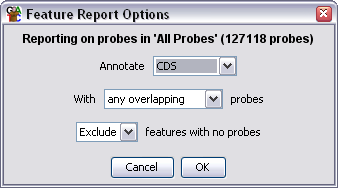
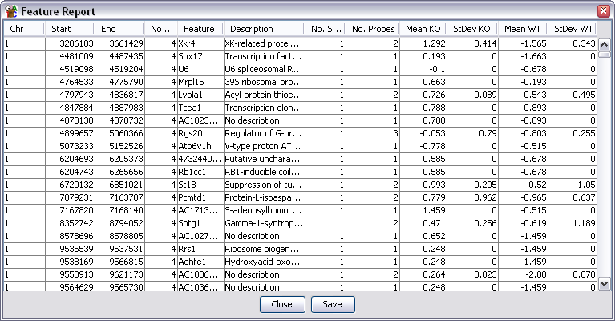

The Feature Report
The Feature Report allows you to construct a report based around a class of
annotation features. Each feature is associated with a set of probes which
overlap that feature and the average quantitated value for that set of probes
is reported.
This kind of report is particularly useful where a feature is the main focus
of your analysis. The most common experiemnt type for this would be an
mRNA-Seq experiment where you could perform your analysis at an exon level, but
then reassemble the individual exons back into transcripts for the report.
Options

- You can choose what type of feature you want to use as the basis for the
report.
- You can choose to either annotate each feature with any probe which overlaps
it, or only with those probes which align exactly either with the feature as
a whole, or any of the individual sublocations (exons)
- Finally, you can choose whether to see an entry for a feature to which
no probes have been mapped.

Output Columns
The columns in an annotated probe report are:
- Chromosome
- Start Position
- End Position
- Average Probe Value - When a filter creates a probe list it can associate a value with
each probe in the list (p-value etc.). This column shows the average value for all probes
in the region. Some filters don't add a value in which case this column will be blank.
- Feature name - will be blank if there is no associated feature. For overlapping
features there will be multiple entries in this column (and description) if the
probe is overlapped by more than one feature
- Description
- Number of Sublocations - How many sublocations (exons) are present in this feature
- Number of Probes - A count of how many probes were included in this region
- Data Columns - there will be two extra columns per data store containing the
mean and standard deviation of the current quantitated values for the probes associated
with each feature
You can choose to sort the report on any of the columns. Just click on a column
header to sort the data on that column. Click again to sort in the opposite direction.
If you double click on any line in the report the chromosome view will jump to that
point in the genome so you can see the data underlying that region.
Saving the Report
If you press the Save button at the bottom you can save the full report to a file.
The files created are tab-delimited text files which you should be able to open in
a spreadsheet application for further processing. The saved report will keep the
current order of the rows in the report.